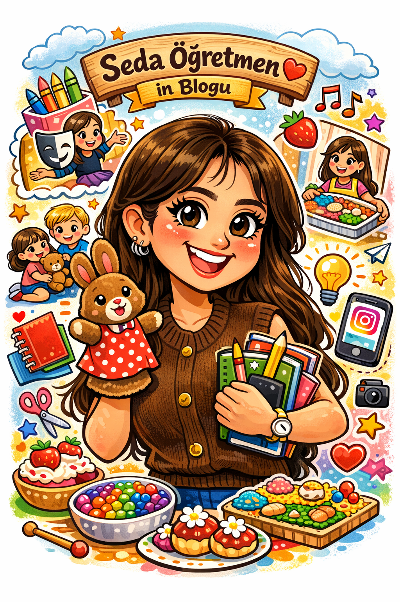

🧠
Gelişim
Gelişimi Desteklemek
Çocukların dil, motor, sosyal ve duygusal gelişimlerini destekleyen öneriler sunar.
Okul öncesi dönemde çocukların gelişimini destekleyen içerikler hazırlayan eğitici bir blog sayfası.
Öğretmenler ve aileler için güvenilir, anlaşılır ve uygulanabilir içerikler.

Bu blog, okul öncesi dönemde çocukların bilişsel, sosyal, duygusal ve motor gelişimlerini desteklemek amacıyla hazırlanmıştır. Öğretmenler ve aileler için eğitici etkinlikler, oyun önerileri, sınıf içi uygulamalar ve gelişim rehberleri sunar.
Blogda yer alan içerikler, çocukların öğrenirken eğlenmesini ve öğretmenlerin sınıf içinde kolayca uygulayabileceği etkinlik fikirlerine ulaşmasını hedefler.
Seda Öğretmenin çocuk gelişimi alanındaki eğitim ve deneyim bilgileri.
Duyusal alanı destekleyen oyunlar ve okul öncesi etkinlikler konusunda öğretmenlere ve ailelere uygulanabilir fikirler sunmak.
Çocukların dil, motor, sosyal ve duygusal gelişimlerini destekleyen öneriler sunar.
Öğretmenlerin sınıfta kolayca uygulayabileceği etkinlik fikirleri paylaşır.
Ailelerin okul öncesi eğitim sürecine aktif katılımını destekler.